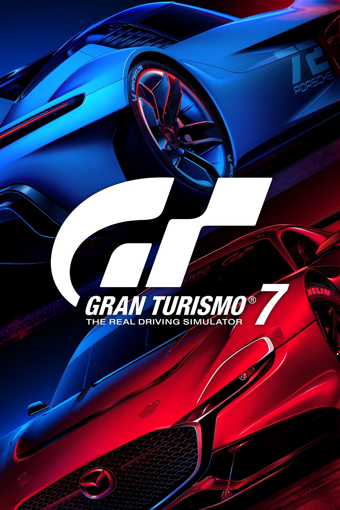
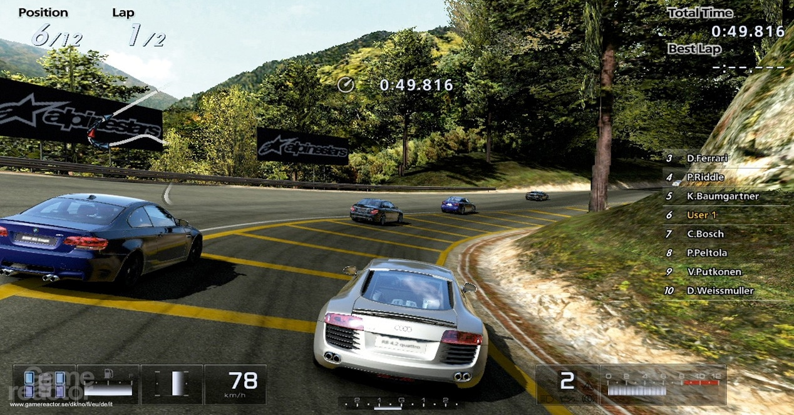
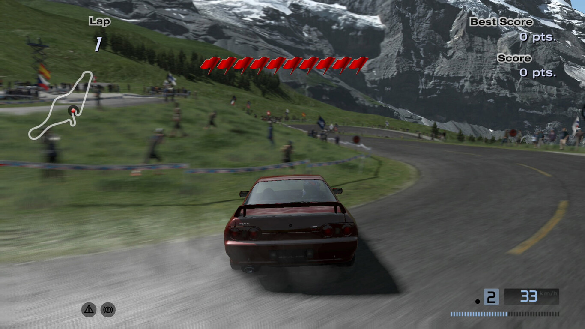

Suscribete y regalame un like
Gran Turismo (グランツーリスモ Guran Tsūrisumo ?) es un videojuego de carreras de 2009 desarrollado por Polyphony Digital y publicado por Sony Computer Entertainment para PlayStation Portable. El juego fue anunciado en la conferencia de prensa E3 de Sony el 11 de mayo de 2004, junto con la PSP original. Después de cinco años de retrasos y especulaciones, durante los cuales fue conocido como Gran Turismo 4 Mobile, Gran Turismo Mobile, Gran Turismo 5 Portable y Gran Turismo Portable, reapareció en el E3 el 2 de junio de 2009, en forma jugable. Fue lanzado el 1 de octubre de 2009 como uno de los títulos de lanzamiento del nuevo PSP Go. Hasta septiembre de 2017, Gran Turismo ha vendido 4.67 millones de unidades, lo que lo convierte en uno de los juegos de PSP más vendidos. El 1 de junio de 2010, el juego fue relanzado como parte de la línea económica de videojuegos Greatest Hits de Sony.
   DESCARGA gran turismo 2009